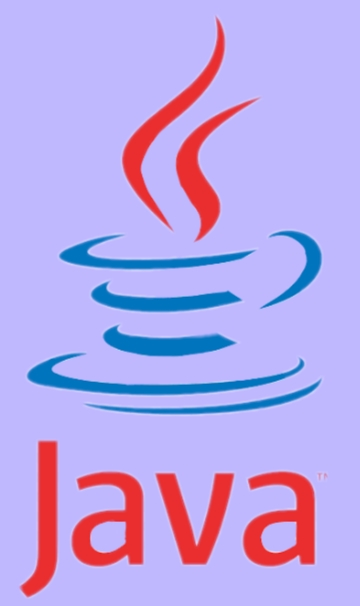

Introduction:
This programming language is a general purpose one, it is class-base, and designed to have aw few problems as possible after implementation. It was created by Sun Microsystems and was released in 1995. It has become the backbone of millions of applications through several platforms like (Windows, macintosh, Android based mobiles). Java syntax is similar to C and C++, but it has facilities fewer than both languages. In 2019, according to GitHub, Java was considerd as one of the most popular used programming languages, and according to Oracle, we have 3 billion devices which Java runs on.
Some applications that Java runs:
- Mobile applications:
Java Platform, Micro Edition like (java ME) is a cross-platform framework which is used to build applications that run on all devices that Java support, including smart phones, even more, applications made for Android (one of the most popular operating systems for mobile) are scripted in Java using Android Sofrware Development Kit.
- Embedded Systems:
Embedded systems, have wide range from tiny chips to specialized computers, represent components of bigger electromechanical systems performing specific tasks. Many devices, such as SIM cards, utility meters and televisions, blue-ray disk players, use embedded Java technologies. According to Oracle, 100% of Blu-ray Disc Players and 125 million TV devices use Java.
- Web Applications:
Web applicationsare supported by java through Servlets, Struts or JSPs. The ease of programming and higher security that was offered by Java programming language has allowed a great number of government applications for health, education, social security and insurance to be based on Java. Java also finds application in development of eCommerce web applications using open-source eCommerce platforms, such as Broadleaf.
- Scientific Applications:
Many software developers have unique choice for writing applications involving scientific calculations and mathematical operations which is Java. These programs are fast and secure, the have higher degree of portability and low maintenance. Applications like MATLAB use Java both for interacting user interface and as part of the core system.
- C#
- Python
- JavaScript
- Main page